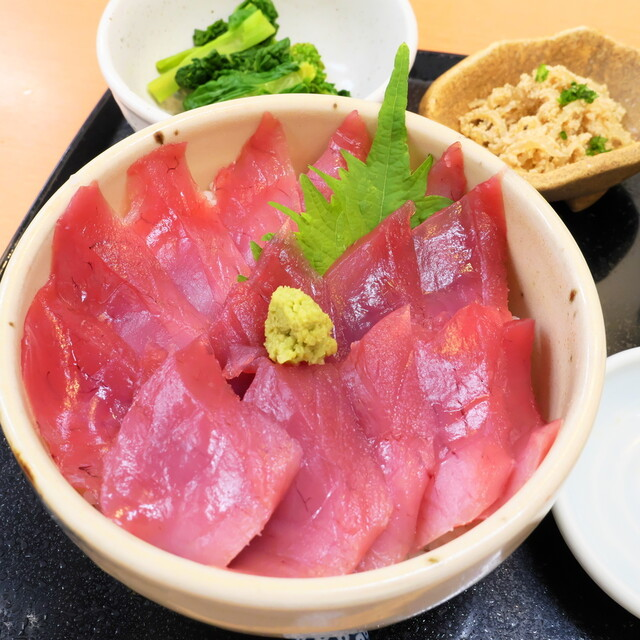

魚屋だからこその鮮度。沼津港から届く地魚を、刺身定食や海鮮丼で。店内のイートインで昼飲みも。

店の奥にはイートインスペースがあり、仕入れたばかりの新鮮な地魚を、刺身定食や海鮮丼で味わえます。昼飲みもできる、魚好きにはたまらない一軒です。
港から届く新鮮な地魚。
鮮魚店ならではの品揃え。
駅前で気軽に一杯。
飛鳥は、沼津駅前にある鮮魚店。店の奥にはイートインスペースがあり、仕入れたばかりの新鮮な地魚を、刺身定食や海鮮丼で味わえます。
お品書きを見る
大手町フェニックスビル1階。仲見世商店街の入口近くです。
アクセス・店舗情報